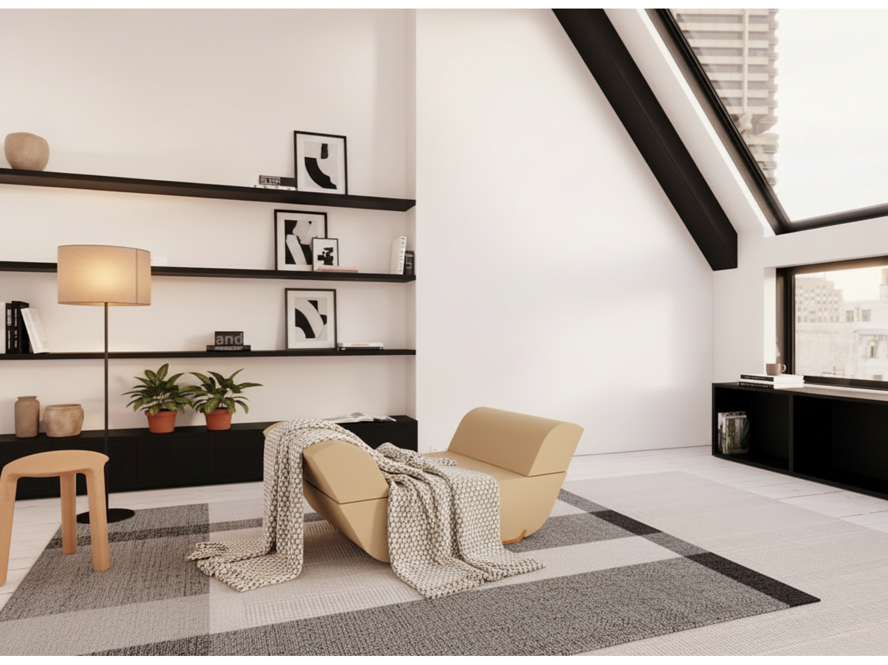
ANDREU WORLD 2025 · FURNITURE DESIGN · TRANSFORMABLE LOUNGE SYSTEM
SOA
Project overview
SOA was conceived as a lounge object that responds to the realities of smaller domestic spaces without giving up comfort or presence. Rather than behaving as a static armchair, the proposal works as a flexible system: a compact volume that can unfold into different modes of use and support more than one type of pause.
The project explores rest as something active and adaptable. Reading, reclining, sitting cross-legged, extending the legs or using the upper cushions as an auxiliary surface all informed the final direction of the proposal.
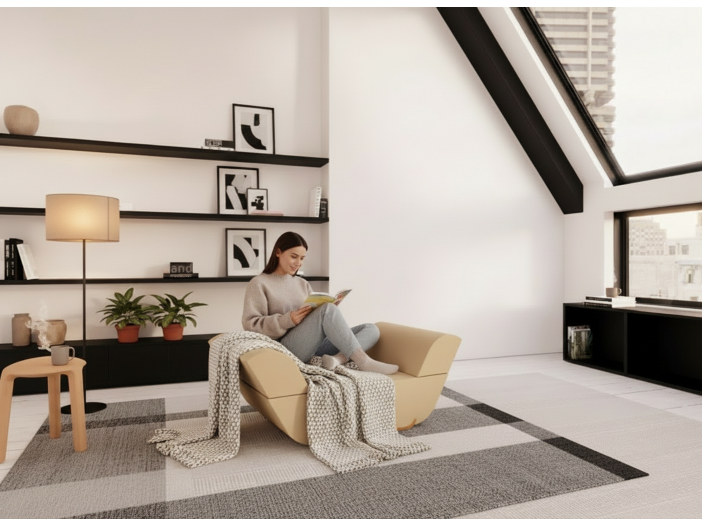
The brief
The proposal was developed around the idea of a multifunctional lounge chair for compact interiors. The challenge was not only to design a comfortable seat, but to create a product that could shift between modes of use while maintaining clarity, softness and a strong furniture identity.
The project therefore focused on three linked questions: how to save space, how to increase utility, and how to keep the object visually calm rather than mechanically overcomplicated.
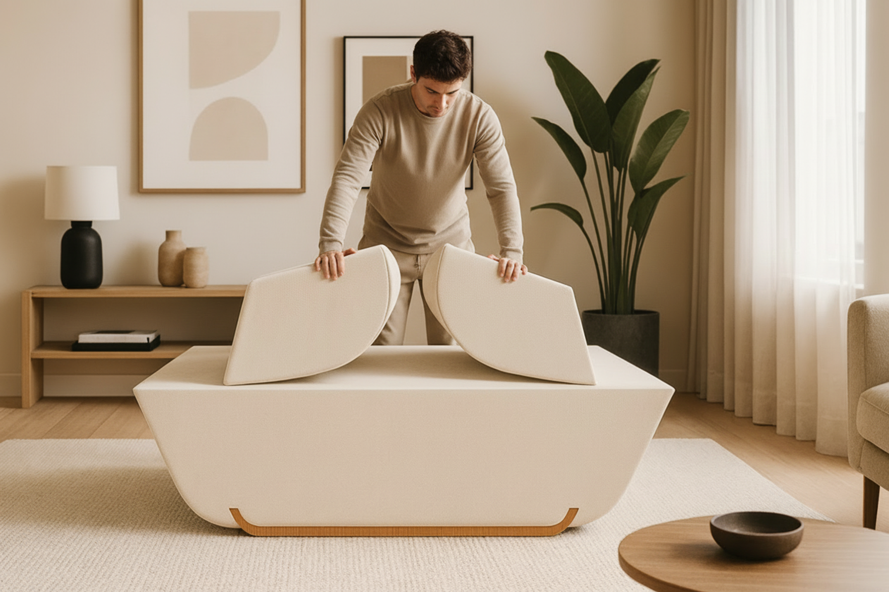
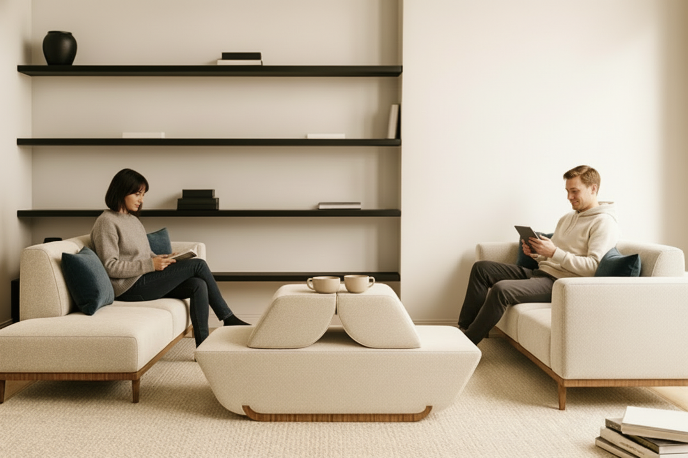
Concept and use logic
SOA is built around a simple but expressive gesture: two upper cushioned volumes that can be read as back support, foot support or an auxiliary surface depending on how the object is approached. This transformable logic allows the piece to adapt to different postures and everyday rituals without multiplying components.
Instead of relying on visible mechanisms, the project works through a compact relationship between base and upper elements, keeping the silhouette clean and domestic. The intention was to make the transformation feel intuitive, almost like a continuation of the user’s movement.
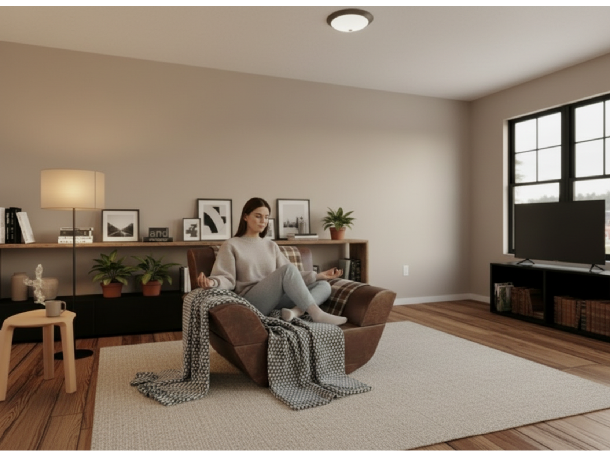

Process
The formal development began with quick sketch exploration focused on proportion, sectional logic and bodily interaction. Early studies tested how a compact object could still suggest openness, support and movement, while also accommodating multiple use modes within one restrained geometry.
As the concept evolved, the proposal was refined through ergonomic thinking, dimensional adjustment and system simplification. The aim was not to chase novelty for its own sake, but to make the multifunctional behaviour legible and calm within a furniture language aligned with the brief.

Material strategy
Materiality was a central part of the proposal. The project combines bio-based foam for comfort and structure, a recycled and recyclable textile for the upholstered envelope, and curved FSC-certified plywood for the base. This combination allowed the proposal to balance softness, durability and a more circular material narrative.
The result is not only aesthetic. Each material contributes to how the object is read and used: the foam shapes the body interaction, the textile gives tactile continuity, and the wooden base anchors the piece visually while reinforcing its furniture character.
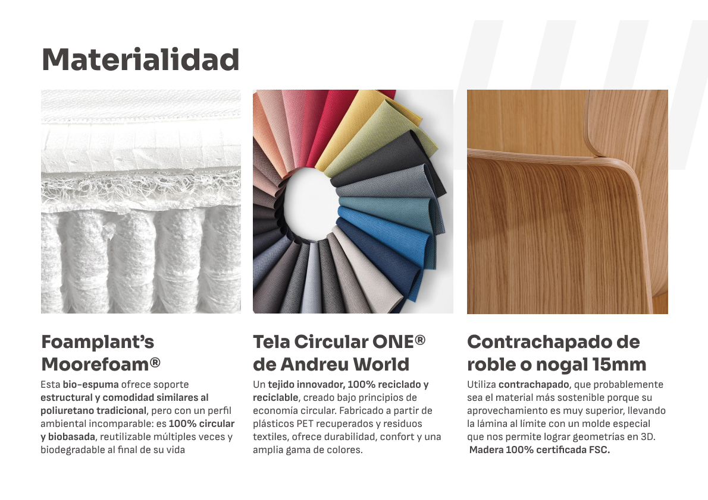
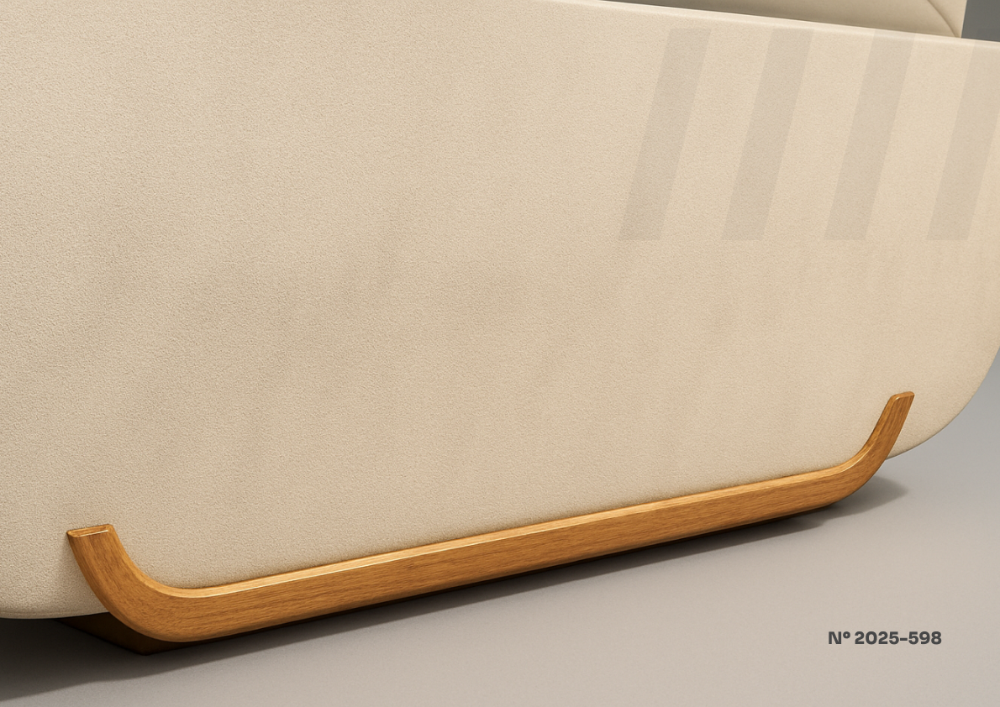
Comfort and ergonomics
Comfort in SOA was considered beyond the standard seated posture. The proposal allows for different ways of inhabiting the object, from upright support to reclined rest and more informal positions. That versatility informed both the sectional profile of the body and the scale of the upper modules.
This approach helped position the project between lounge seating and adaptable domestic support, giving it a broader behavioural range while preserving a compact footprint.
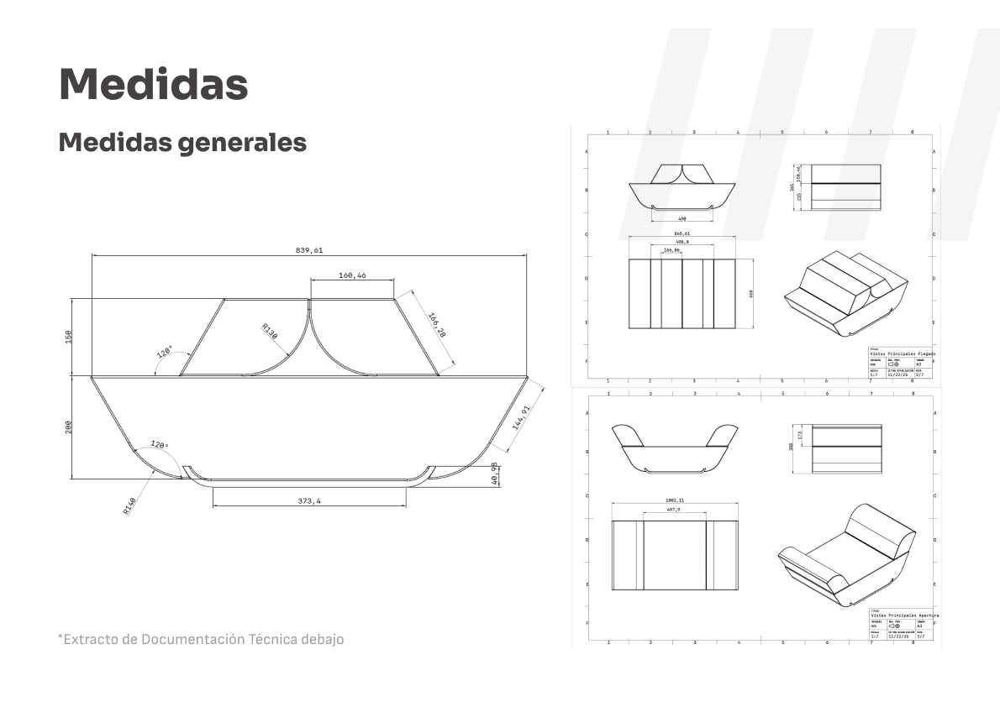

Production logic
Beyond the visual proposal, the project was developed with an eye on manufacturability. The production logic combines foam cutting and shaping, textile pattern cutting and upholstery, and steam-bent plywood fabrication for the base. Thinking through these processes was key to keeping the object grounded as a realistic furniture concept rather than a purely speculative form.
The technical documentation also supported the project with assembly thinking, dimensional consistency and an early production-oriented structure.
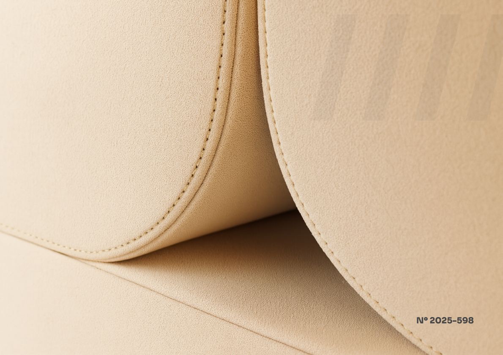
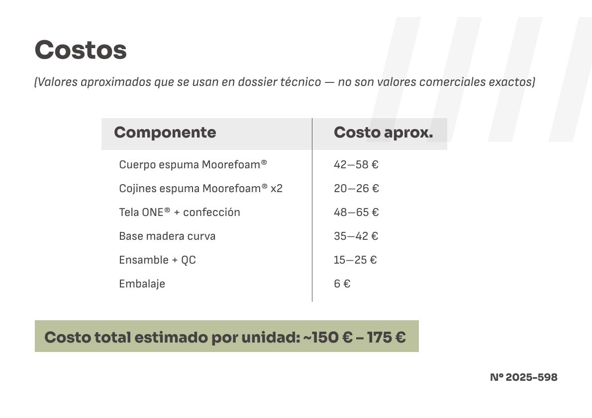
Renders and proposal views
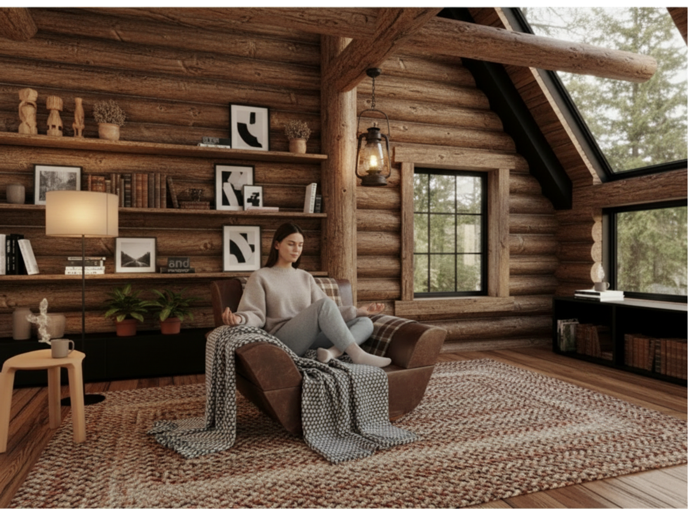
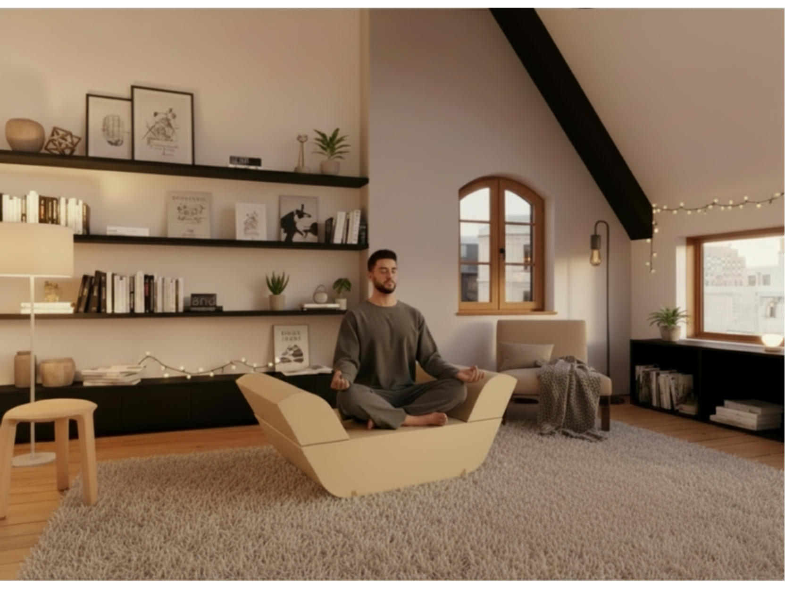
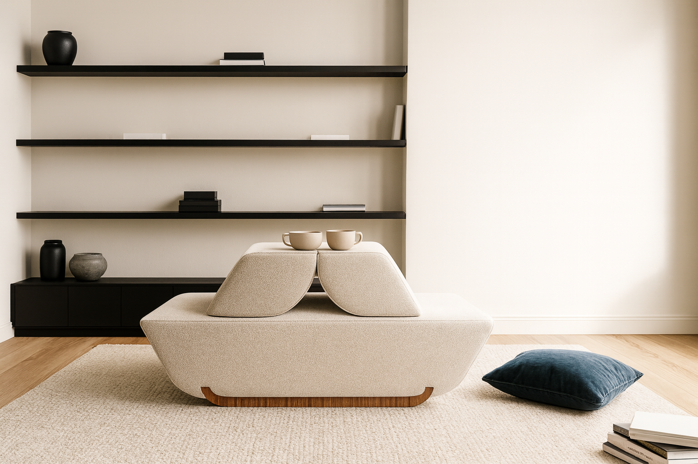
Project documents
The proposal was supported by a presentation dossier including concept development, sketches, material strategy, general dimensions, ergonomic studies, production notes, cost estimation and technical documentation excerpts.
Reflection
SOA allowed me to explore furniture not just as an isolated form, but as a compact behavioural system. What interested me most in the project was the balance between softness and structure, calmness and utility, and the possibility of giving a small-space object more than one clear role without overloading it.
It also became a valuable exercise in aligning concept, material logic and production thinking within a proposal that had to communicate both warmth and precision.